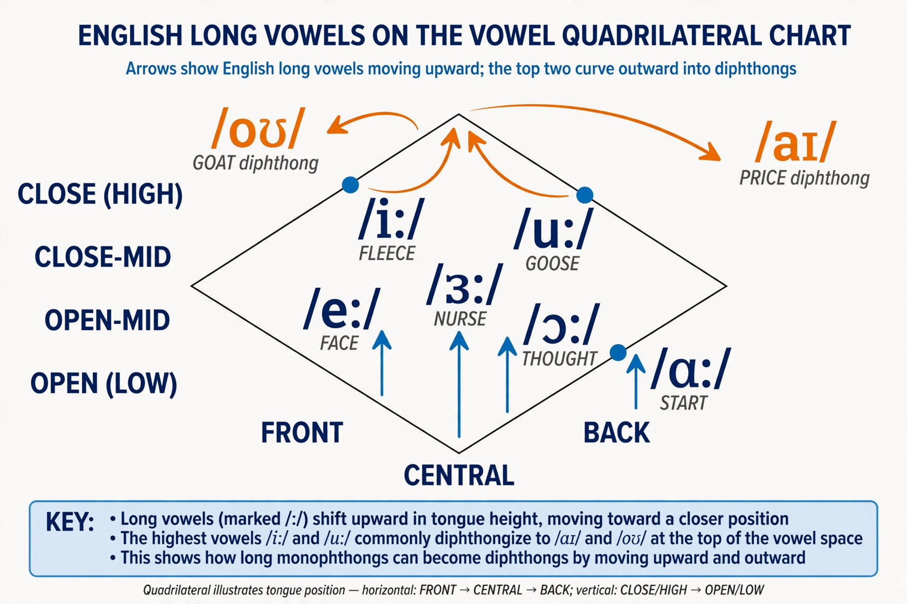

| Great Vowel Shift | |
|---|---|
| Language | English (Middle English → Early Modern English) |
| Period | c. 1400 – 1700 |
| Effect | All Middle English long vowels raised; the two highest became diphthongs |
| Named by | Otto Jespersen (1909), who coined the term |
The Great Vowel Shift was a series of changes in the pronunciation of the English language that started in southern England and took place mainly between 1400 and 1700, beginning during the transition from Middle English to Early Modern English. It was first described and named by the Danish linguist Otto Jespersen in 1909. Through the shift, the pronunciation of all Middle English long vowels changed: vowels were generally raised (pronounced with the tongue higher in the mouth), and the two highest vowels became diphthongs.
The shift is the single most important reason that English vowel letters so often fail to match their sounds in the way learners of other European languages expect: English spelling was being standardised by printers just as the vowels were on the move, and it largely fossilised the pre-shift values.
In outline, the long vowels of Chaucer's Middle English moved as follows (using IPA values, approximately):
Because each vowel moved up into the place of the one above it while the highest two left the vowel space as diphthongs, the shift is a classic chain shift — comparable in structure to Grimm's law among the consonants of Germanic — though scholars debate whether it was a "push chain" (vowels rising from below) or a "drag chain" (diphthongisation at the top pulling the rest up).
A word like bite was pronounced roughly [biːtə] in Chaucer's day, [bəit] by Shakespeare's time, and [baɪt] today. Feet moved from [feːt] to [fiːt]; house from [huːs] to [haʊs]. The differing outcomes are fossilised in alternations such as divine/divinity, serene/serenity, and profound/profundity, where a following shortening froze derivatives at an intermediate stage. Scots and some northern English dialects did not undergo parts of the shift — hence hoose and mooth in Scots — providing living evidence of the earlier state.

Since the shift predates recording, historical linguists reconstruct it from several kinds of evidence: rhymes in poetry (which change over the centuries in step with the shift); spellings, including the "occasional spellings" of semi-literate writers who wrote as they spoke; comments by contemporary spelling reformers and orthoepists such as John Hart; and the treatment of English loanwords in other languages and vice versa. Shakespeare's puns often depend on pronunciations mid-shift — for instance, reason and raisin were then homophones.
The cause of the shift is unsettled. Proposed explanations include social mobility and dialect mixing in London after the Black Death, when large numbers of migrants from the Midlands and north brought competing pronunciations; hypercorrection, as an upwardly mobile merchant class overshot prestige vowels; contact with French; and purely internal phonetic drift of a kind seen in chain shifts in many languages. None commands consensus, and the shift may have had different triggers in different regions, proceeding at different speeds — indeed, it continued in some northern varieties into the 20th century and arguably continues still in parts of the English-speaking world.
The shift separates the sound of English decisively from that of its continental Germanic relatives and from the way English words are spelled. Geoffrey Chaucer (d. 1400) wrote just before it, so his verse rhymes fail for modern readers; by Shakespeare's death in 1616 the shift was far advanced; by 1700 the modern system was essentially in place in the south of England. Together with the standardisation of spelling during the same centuries, it produced the notorious depth of modern English orthography — the same letter ea, for example, represents different vowels in bread, beat, and great because the words stood at different points of the shift when printing fixed their forms.